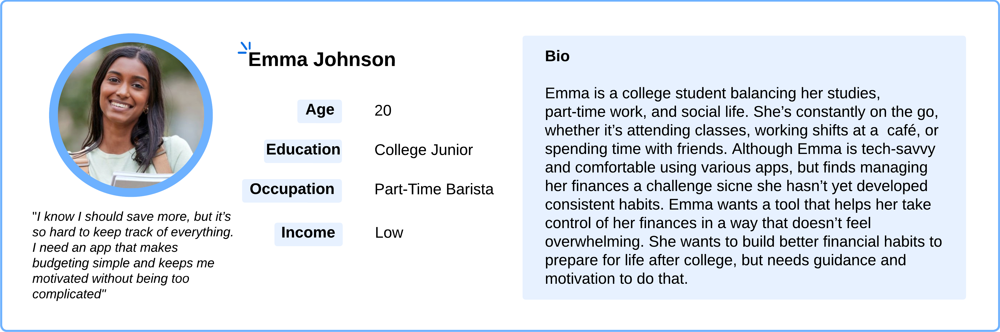
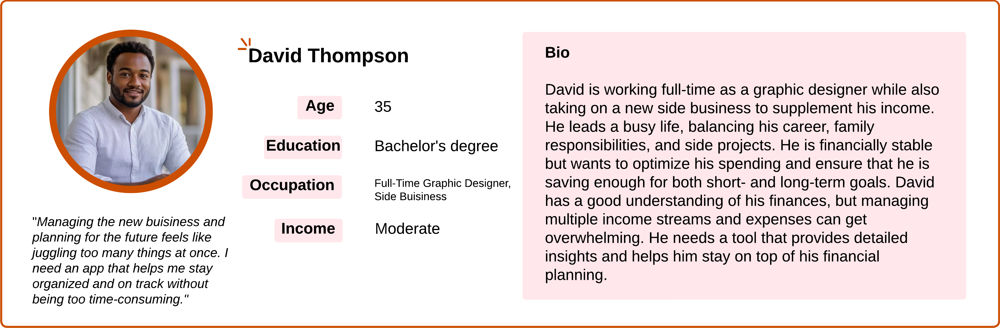
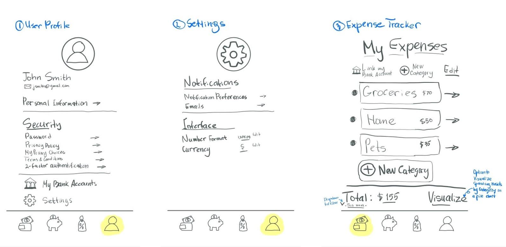

Discovery Phase
To lay the foundation for the Save-a-Coin app, we conducted comprehensive research into the most popular budget tracking and saving apps on the market. We analyzed 12 leading apps, including Goodbudget, Ibotta, Monarch, and others. Our goal was to identify the strengths and weaknesses of each app, focusing on usability, >eature set, availability, and reach.
To synthesize our findings, we created a Function Matrix to map out essential features and identify areas where existing apps fell short. This process guided our brainstorming sessions and informed our approach to designing a comprehensive and user-friendly money-saving experience.
Research
The next step in the project was to identify our target audience and stakeholders. After thorough analysis, we determined that the primary users of the Save-a-Coin app are adults, college students, families, and online shoppers, focusing on individuals seeking financial control, expense tracking, and efficient saving strategies. The key stakeholders include investors, business partners, competitor apps, the stock market, developers, and app employees.

To better understand our users, we created three detailed personas to visualize their needs and preferences.



Design Process
The design phase consisted of three stages: Low-Fidelity, Mid-Fidelity, and High-Fidelity prototypes. The Low-Fidelity prototype was a basic sketch of the primary application screens, including the navigation menu, main buttons, and essential sections such as the user account, spending tracker, savings dashboard, and a page for product coupons and deals.

The Mid-Fidelity prototype introduced
interactive elements, showcasing the app's
core functionality and
navigation flow.